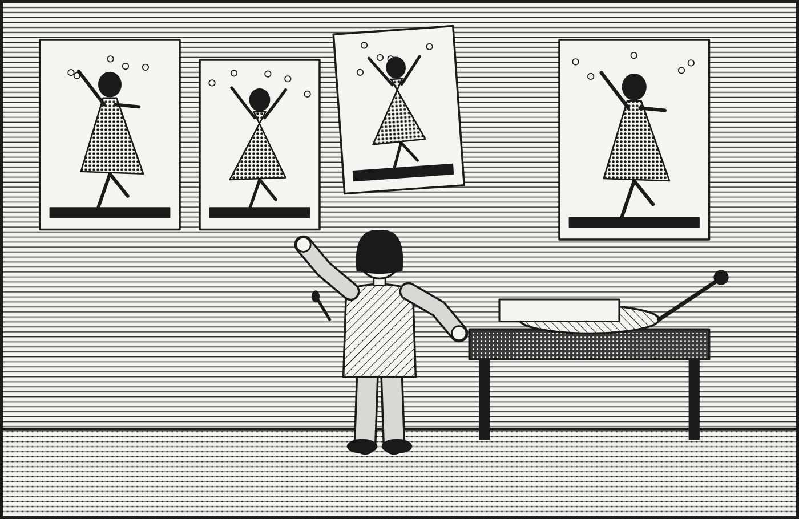

광고·마케팅 업계 뉴스 · 발행인 금로동 기자
회색 파리의 벽을 색으로 칠한, 현대 포스터의 아버지

독자 여러분, 오늘은 광고가 거리의 '벽'에서 자라던 시절로 가 봅니다. 쥘 셰레는 19세기 후반 파리에서 활동한 화가이자 석판화가로, 흔히 '현대 포스터의 아버지'로 불립니다. 그는 여러 장의 석판으로 색을 겹쳐 찍는 컬러 석판 인쇄를 다듬어, 글자만 빽빽하던 벽보를 밝은 색과 생동하는 인물이 있는 그림으로 바꿨습니다. 1889년 문을 연 물랭루주의 무도회 포스터, 1893년 폴리베르제르 무대에 선 무용가 로이 풀러 포스터가 대표적이지요. 화면 가득 춤추듯 뛰노는 여성 인물은 '셰레트'라는 별명까지 얻었습니다. 평생 천 점이 넘는 포스터를 남겼고, 그 공로로 레지옹 도뇌르 훈장도 받았습니다. 지나가는 사람의 눈을 한순간에 붙잡는 일, 오늘 우리가 스크롤 위에서 하는 그 일의 원형이 셰레의 벽에 있었습니다.